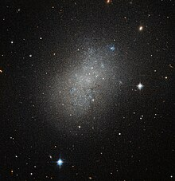

The Milky Way, our galactic home, is a sprawling spiral galaxy that spans approximately 100,000 light-years in diameter and contains billions of stars, vast clouds of gas and dust, and enigmatic dark matter. Its distinctive spiral structure is characterized by sweeping arms of stars and interstellar material, gracefully spiraling outward from a luminous central bulge. Our solar system occupies a modest position within one of these spiral arms, known as the Orion Arm or Local Spur, situated roughly 27,000 light-years from the galactic center. At the heart of the Milky Way lies a supermassive black hole, with a mass millions of times that of our Sun, surrounded by a dense cluster of stars in the galactic bulge. Extending outward from the bulge are the spiral arms, regions where young, hot stars are born from the gravitational collapse of giant molecular clouds. These arms are adorned with star clusters, nebulae, and regions of intense star formation, creating breathtaking vistas of cosmic splendor. Throughout its history, the Milky Way has undergone countless cycles of star birth and death, sculpting its structure and enriching its chemical composition with the elements essential for life. From its serene spiral arms to its bustling galactic center, the Milky Way offers a rich tapestry of cosmic phenomena that continues to captivate astronomers and inspire wonder about the nature and evolution of galaxies.
Galaxies, the cosmic building blocks of the universe, display a rich diversity of shapes and structures. Among these, several main types stand out:
Spiral Galaxies: These galaxies boast elegant spiral arms that wind outward from a central bulge. Within these arms reside young, luminous stars along with interstellar gas and dust. The Milky Way serves as a prime example of a spiral galaxy, offering a stunning illustration of this classic galactic form. Spiral galaxies further subdivide into grand design spirals, characterized by well-defined, prominent arms, and flocculent spirals, which exhibit more irregular, fragmented arm patterns.
Elliptical Galaxies: Elliptical galaxies take on an oval or ellipsoidal shape, lacking the spiral structure of their counterparts. Composed mainly of older stars, these galaxies contain minimal interstellar material. They span a range of elongations, from nearly spherical to highly stretched, with classification based on their degree of elongation.
Lenticular Galaxies: Intermediate between spirals and ellipticals, lenticular galaxies, or S0 galaxies, sport a disk-like structure akin to spirals but lack distinct spiral arms. They harbor both old and young stars but feature minimal ongoing star formation.
Irregular Galaxies: Irregular galaxies defy convention with their chaotic, irregular shapes and lack of distinct structure. These galaxies, abundant in interstellar gas and dust, serve as active sites of ongoing star formation. Within this category, Irr I galaxies exhibit some semblance of structure, while Irr II galaxies appear more disordered and chaotic.
Dwarf Galaxies: Dwarf galaxies, diminutive in size and luminosity, populate the cosmic landscape, often clustering around larger galaxies like the Milky Way. Displaying a range of shapes, including irregular, elliptical, and dwarf spiral forms, these galaxies play a vital role in galaxy formation and evolution.
Through their myriad forms, galaxies offer a window into the dynamic and diverse universe, shedding light on the processes that shape cosmic structures and fuel the ongoing evolution of the cosmos.
Clusters, superclusters, and galactic filaments are integral components of the cosmic web, shaping the largest-scale structures in the universe. Galaxy clusters, the most readily identifiable of these structures, are vast collections of galaxies bound together by gravity. Ranging in size from small groups to massive clusters containing thousands of galaxies, these formations are hubs of cosmic activity, hosting interactions between galaxies, dark matter, and hot intergalactic gas. Beyond clusters lie superclusters, colossal conglomerations of galaxy clusters and groups, spanning hundreds of millions of light-years across. Superclusters, such as the Shapley Supercluster and the Sloan Great Wall, form the backbone of the cosmic web, linking clusters and shaping the distribution of matter on a grand scale. Connecting these superstructures are galactic filaments, thread-like structures stretching across billions of light-years. Composed of dark matter, intergalactic gas, and galaxies, these filaments serve as the cosmic highways along which galaxies and clusters are arranged. They are pivotal in understanding the large-scale structure of the universe and the processes driving its evolution. Together, clusters, superclusters, and galactic filaments paint a rich tapestry of the universe's structure, revealing the intricate interplay of gravity and cosmic evolution on the grandest scales imaginable.

Dwarf galaxies, though diminutive in size and luminosity compared to their larger counterparts, play a significant role in shaping the cosmic landscape. These galaxies, often found in the vicinity of larger galaxies like the Milky Way, Andromeda, or other galaxy groups and clusters, exhibit a diverse range of shapes and structures. While some dwarf galaxies display irregular shapes with chaotic distributions of stars and gas, others may possess more organized structures, resembling scaled-down versions of larger spiral or elliptical galaxies. Despite their modest stature, dwarf galaxies are not to be overlooked; they contribute vital insights into galactic formation and evolution. Some dwarf galaxies harbor active star-forming regions, fostering the birth of new stars and enriching their environments with heavy elements. Others may contain ancient stellar populations, offering windows into the early epochs of cosmic history. Additionally, interactions between dwarf galaxies and their larger counterparts can lead to tidal distortions, stellar streams, and even mergers, influencing the evolution of both the dwarfs and their larger companions. As astronomers continue to study these enigmatic galaxies, they uncover invaluable clues about the processes driving galactic evolution and the intricate interplay between cosmic structures of all sizes.
